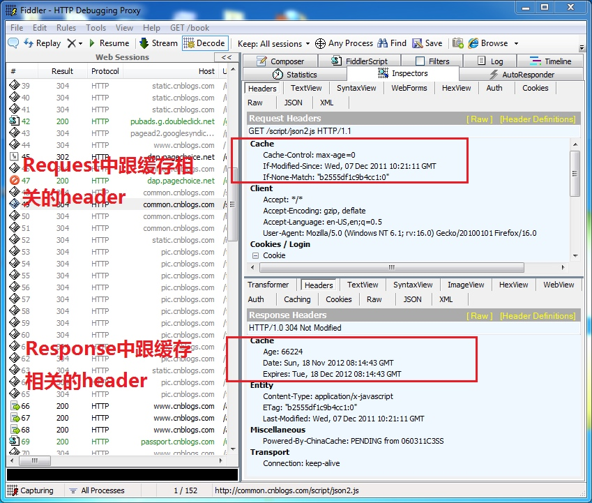
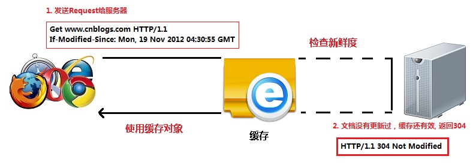
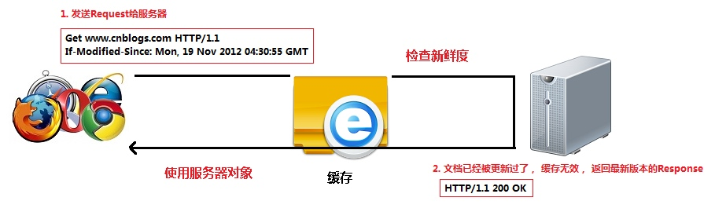
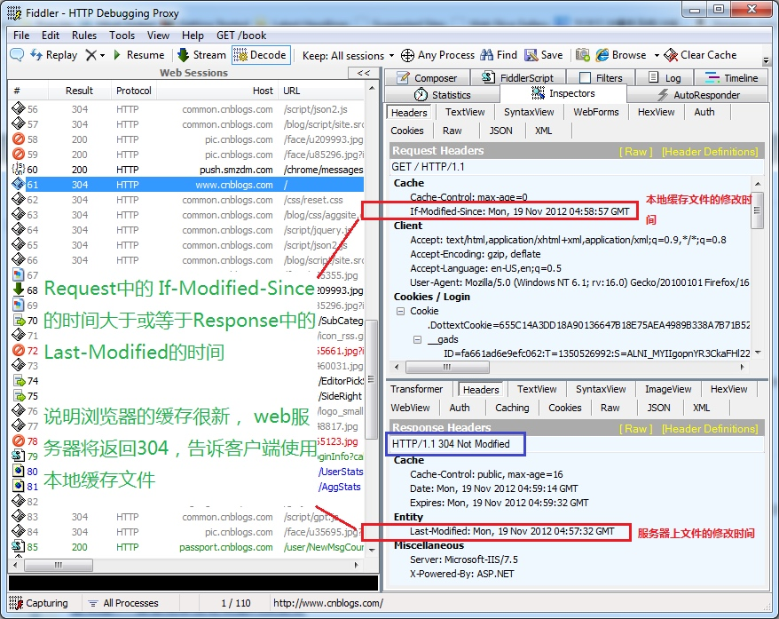
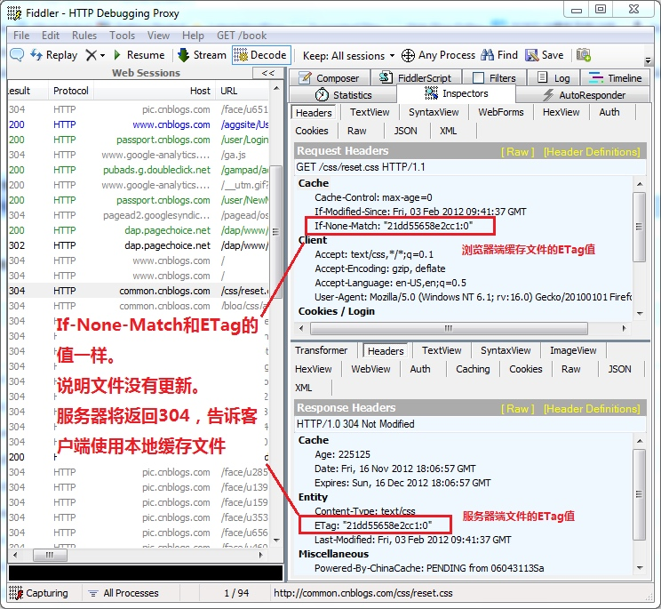
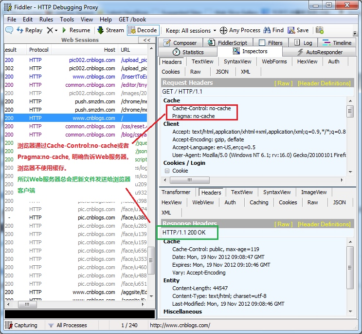
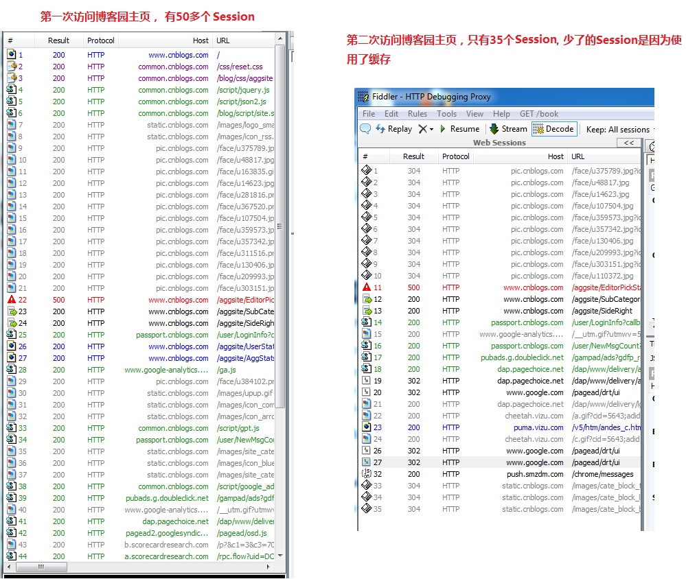
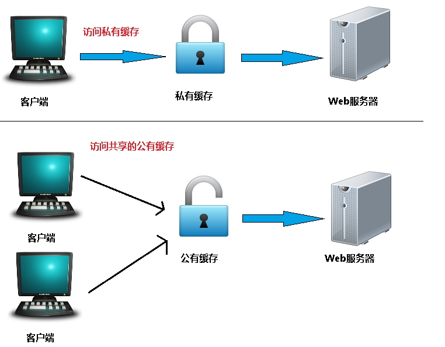

HTTP协议 (四) 缓存
这次继续介绍HTTP协议中的缓存机制。HTTP协议提供了非常强大的缓存机制， 了解这些缓存机制，对提高网站的性能非常有帮助。 本文介绍浏览器和Web服务器之间如何处理"浏览器缓存"，以及控制缓存的http header.
缓存的概念
缓存这个东西真的是无处不在， 有浏览器端的缓存， 有服务器端的缓存，有代理服务器的缓存， 有ASP.NET页面缓存，对象缓存。 数据库也有缓存， 等等。
http中具有缓存功能的是浏览器缓存，以及缓存代理服务器。
http缓存的是指:当Web请求抵达缓存时， 如果本地有“已缓存的”副本，就可以从本地存储设备而不是从原始服务器中提取这个文档。
缓存的好处
缓存的好处是显而易见的， 好处有，
1. 减少了冗余的数据传输，节省了网费。
2. 减少了服务器的负担， 大大提高了网站的性能
3. 加快了客户端加载网页的速度
Fiddler可以方便地查看缓存的header
Fiddler中把header都分门别类的放在一起，这样方便查看。

如何判断缓存新鲜度
Web服务器通过2种方式来判断浏览器缓存是否是最新的。
第一种， 浏览器把缓存文件的最后修改时间通过 header ”If-Modified-Since“来告诉Web服务器。
第二种， 浏览器把缓存文件的ETag, 通过header "If-None-Match", 来告诉Web服务器。
通过最后修改时间, 来判断缓存新鲜度
- 浏览器客户端想请求一个文档， 首先检查本地缓存，发现存在这个文档的缓存， 获取缓存中文档的最后修改时间，通过： If-Modified-Since， 发送Request给Web服务器。
Web服务器收到Request，将服务器的文档修改时间（Last-Modified）: 跟request header 中的，If-Modified-Since相比较， 如果时间是一样的， 说明缓存还是最新的， Web服务器将发送304 Not Modified给浏览器客户端， 告诉客户端直接使用缓存里的版本。如下图。
假如该文档已经被更新了。Web服务器将发送该文档的最新版本给浏览器客户端， 如下图。

实例： 打开Fiddler, 然后打开博客园首页。然后F5刷新几次浏览器。 你会看到博客园首页也用了缓存。

与缓存有关的header
我们来看看每个header的具体含义。
Request
Cache-Control: max-age=0 以秒为单位 If-Modified-Since: Mon, 19 Nov 2012 08:38:01 GMT 缓存文件的最后修改时间。 If-None-Match: "0693f67a67cc1:0" 缓存文件的Etag值 Cache-Control: no-cache 不使用缓存 Pragma: no-cache 不使用缓存
Response
Cache-Control: public 响应被缓存，并且在多用户间共享 Cache-Control: private 响应只能作为私有缓存，不能在用户之间共享 Cache-Control:no-cache 提醒浏览器要从服务器提取文档进行验证 Cache-Control:no-store 绝对禁止缓存（用于机密，敏感文件） Cache-Control: max-age=60 60秒之后缓存过期（相对时间） Date: Mon, 19 Nov 2012 08:39:00 GMT 当前response发送的时间 Expires: Mon, 19 Nov 2012 08:40:01 GMT 缓存过期的时间（绝对时间） Last-Modified: Mon, 19 Nov 2012 08:38:01 GMT 服务器端文件的最后修改时间 ETag: "20b1add7ec1cd1:0" 服务器端文件的Etag值
如果同时存在cache-control和Expires怎么办呢？
浏览器总是优先使用cache-control，如果没有cache-control才考虑Expires
ETag
ETag是实体标签（Entity Tag）的缩写， 根据实体内容生成的一段hash字符串（类似于MD5或者SHA1之后的结果），可以标识资源的状态。 当资源发送改变时，ETag也随之发生变化。
ETag是Web服务端产生的，然后发给浏览器客户端。浏览器客户端是不用关心Etag是如何产生的。
为什么使用ETag呢？ 主要是为了解决Last-Modified 无法解决的一些问题。
1. 某些服务器不能精确得到文件的最后修改时间， 这样就无法通过最后修改时间来判断文件是否更新了。
2. 某些文件的修改非常频繁，在秒以下的时间内进行修改. Last-Modified只能精确到秒。
3. 一些文件的最后修改时间改变了，但是内容并未改变。 我们不希望客户端认为这个文件修改了。
实例， 打开Fiddler, 打开博客园首页。 你可以看到很多图片，或者CSS文件都是用了缓存。 这些都是通过比较ETag的值，来判断文件是否更新了。

浏览器不使用缓存
CTRL+F5强制刷新浏览器，或者设置IE。 可以让浏览器不使用缓存。
1. 浏览器发送Http request, 给Web 服务器， header中带有Cache-Control: no-cache. 明确告诉Web服务器，客户端不使用缓存。
2. Web服务器将把最新的文档发送给浏览器客户端.
实例:
打开Fiddler, 打开博客园首页， 然后按CTRL+F5强制刷新浏览器，你将看到

Pragma: no-cache的作用和Cache-Control: no-cache一模一样。 都是不使用缓存。
Pragma: no-cache 是HTTP 1.0中定义的， 所以为了兼容HTTP 1.0. 所以会同时使用Pragma: no-cache和Cache-Control: no-cache
直接使用缓存，不去服务器验证
按F5刷新浏览器和在地址栏里输入网址然后回车。 这两个行为是不一样的。
按F5刷新浏览器， 浏览器会去Web服务器验证缓存。
如果是在地址栏输入网址然后回车，浏览器会"直接使用有效的缓存", 而不会发http request 去服务器验证缓存，这种情况叫做缓存命中，如下图
实例： 比较第一次访问博客园主页和第二次博客园主页
1. 启动Fiddler, 用firefox打开博客园主页， 发现有50多个session。
2. 按CTRL+X将Fiddler中的所有session删除。 关闭firefox,重新打开一个firefox，打开博客园主页。发现只有30多个session.
分析:少了的session是因为firefox直接用了缓存，而没有发http request。

公有缓存和私有缓存的区别
Cache-Control: public 指可以公有缓存， 可以是数千名用户共享的。
Cache-Control: private 指只支持私有缓存， 私有缓存是单个用户专用的。
